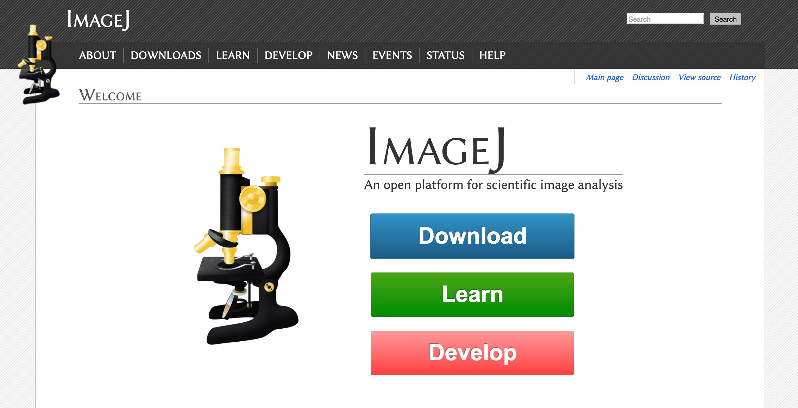

Image Analysis with Fiji


What is ImageJ?
A tool for scientific image analysis
- Open source
- You wouldn't write:
Added 500mg of unknown chemical.
- So don't put your data in a black box!
- You wouldn't write:
- Rich ecosystem: thousands of
plugins
- Science = reproducibility
Plugins ▶ Utilities ▶ Make Fiji Package
Fiji Is Just ImageJ
Ctrl + L to find commands
Learn how to fish

Learn how to fish
Teach me how to fish!
The main window

- Tip: click on the status bar
- Tip: right / double-click on Tools
Staying up-to-date

Memory management
Edit ▶ Options ▶ Memory & Threads
Plugins ▶ Utilities ▶ Monitor Memory
Opening data
Drag and Drop
File ▶ Open...
File ▶ Import ▶ Bio-Formats
Pixel types
Pixel type pitfalls
- Know the limitations of your data
- File ▶ New ▶ Image... (32-bit, ramp, 20x20)
- Process ▶ Math ▶ Multiply... : 100,000,000
- Probe values
- Process ▶ Math ▶ Add... : 1
- Probe values
- Can you find any problems?
Get to know your data
- File ▶ Open Samples ▶ Boats
- Analyze ▶ Histogram
- Compare histograms:
File ▶ Open Samples ▶ Blobs
What would cause this histogram? ➙
Profile Plots
Qualitative observation → Quantitative data
- Open Blobs (Shift + B)
- Use any Line tool
- Analyze ▶ Plot Profile
Image ▶ Stacks ▶ Plot Z-Axis Profile...
Thresholding
Isolate values of interest
- Open Blobs (Shift + B)
- Use any Line tool
- Image ▶ Adjust ▶ Threshold... (Shift + T)
Which method is best?
Image ▶ Adjust ▶ Auto Threshold, Try All
Regions of Interest (ROIs)
- File ▶ Open Samples ▶ Clown (14K)
- Freehand selection tool
- Circle the clown nose
- Analyze ▶ Measure (Ctrl + M)
Can you draw the same exact circle on a new clown?
- Select a nose
- Press T – or Analyze ▶ Tools ▶ ROI Manager (Ctrl + T)
- Select other clown
- Click ROI in manager – or Edit ▶ Selection ▶ Restore Selection
Image processing principles
What does this image tell us about the volume of this pipette?
Image formats are not created equal!
- Pixels are not little squares
- http://alvyray.com/Memos/CG/Microsoft/6_pixel.pdf
- Can think of detectors as sampling a Gaussian
Edit ▶ Options ▶ Appearance...
File ▶ Open Samples ▶ Adelsons Squares
File ▶ Open Samples ▶ Comparing Lengths
File ▶ Open Samples ▶ Straight Lines
Purves, D., Lotto, R. B., & Nundy, S. (2002). Why we see what we do. American Scientist, 90(3), 236-243.
1x
1/4x

No stripes?
1/12x

WTF?
Image ▶ Color ▶ Simulate Color Blindness
Many more details: Basics of Quantitative Image Analysis
Image registration
Unify coordinates of 2+ images

- File ▶ Open Samples ▶ Centipede Drawing
- File ▶ Open Samples ▶ Centipede Mivart
- Draw lines between equivalent points
- Plugins ▶ Registration ▶ Align Image by line ROI
3D Visualization

- File ▶ Open Samples ▶ T1 Head (2.4M, 16-bits)
- Image ▶ Type ▶ 8-bit
- Plugins ▶ 3D Viewer (Resampling Factor: 1)
Segmentation
Identify blobs of interest
- File ▶ Open Samples ▶ Blobs (25k)
- Image ▶ Duplicate...
- Image ▶ Adjust ▶ Auto Threshold
- Process ▶ Binary ▶ Dilate (x2)
- Process ▶ Binary ▶ Watershed
- Anaylze ▶ Analyze Particles...
Macros: Never forget again
Plugins ▶ Macros ▶ Record...
Further Reading
- Help from the community—ImageJ forum!
- The ImageJ user guides:
- A thorough Fiji tutorial for beginners:
- Additional workshops and presentations: